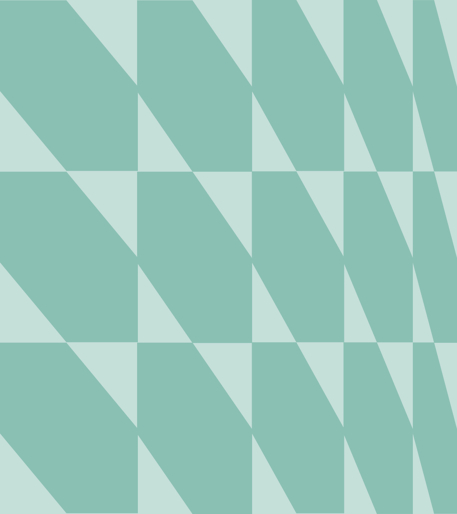

test
Shiny Documents
This Quarto document is made interactive using Shiny. Interactive documents allow readers to modify parameters and see the results immediately. Learn more about Shiny interactive documents at https://quarto.org/docs/interactive/shiny/.
Inputs and Outputs
You can embed Shiny inputs and outputs in your document. Outputs are automatically updated whenever inputs change. This demonstrates how a standard R plot can be made interactive:
Executive Summary
Omni’s qualitative analysis guide supports staff in conducting transparent, systematic, and actionable qualitative research in complex, real-world settings. Our clients often require timely, credible findings grounded in participants’ lived experiences. To meet these demands, this guide outlines practical workflows rooted in two complementary paradigms: pragmatism and critical realism.
- Pragmatism directs us to focus on real-world utility and actionable insights.
- Critical realism encourages us to understand participant perspectives while acknowledging how those perspectives are shaped by broader structures and contexts.
Together, these paradigms support our commitment to meaningful, context-aware findings that are both usable and methodologically sound.
This guide provides step-by-step instructions for conducting qualitative analysis, from data pre-processing to reporting. It includes techniques like word frequency analysis, sentiment analysis, thematic coding, content analysis, and topic modeling, all implemented with transparency and adaptability in mind.
Key Features of the Guide:
Tool Flexibility: While R is our preferred tool for reproducibility and integration with quantitative methods, the guide also includes best-practice workflows for using Dedoose (for team-based coding) and AI tools like NotebookLM (for early exploratory work).
Method Selection Guidance: We offer practical decision points based on dataset size, analytic goals, and project context, ensuring methods match the scope and purpose of each evaluation.
Structured Workflows: Omni workflows help analysts navigate all stages of qualitative analysis—from clarifying analytic frameworks and coding approaches to integrating qualitative and quantitative data in mixed-methods designs.
Adaptability: Whether you're working with rich interview transcripts or brief open-ended survey responses, the guide provides adaptable tools that emphasize rigor, transparency, and context.
By centering participant voices, documenting our methods clearly, and maintaining a reflexive stance, this guide strengthens the credibility and usefulness of Omni's qualitative work. It equips staff with tools and strategies that not only meet evaluation standards but also foster accountability, responsiveness, and connection to the communities we serve.
Version Control
| Version | Description | Date released |
|---|---|---|
| -4.0 | Adding interactive features | 2025-08-14 |
| -5.0 | Second draft for review and rebrand | 2025-08-14 |
| -6.0 | Initial draft for review | 2025-03-26 |
Strengthening Co-Responder programs in Adam's County through shared learning, data, and systems alignment.
